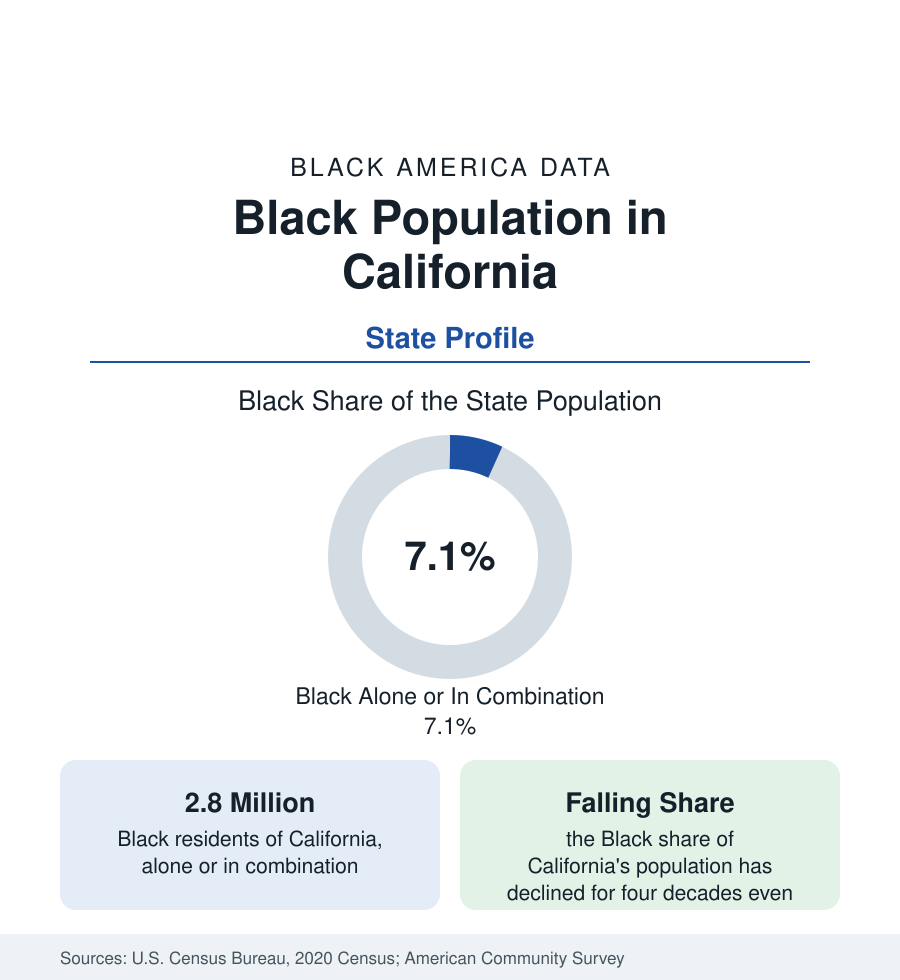

Black Census
Black Population in California: A Shrinking Share of a Growing State
About 2.8 million Black Californians — roughly 7 percent of the state — face the series' clearest case of growth without share: numbers hold, proportion falls, and many leave for Texas and the South.

California holds about 2.8 million Black residents — Black alone or in combination — roughly 7 percent of the most populous state in the union, with Black alone at about 2.2 million, or 5.7 percent. The profile's defining feature is unique in this series: a Black population near its historic peak in absolute terms whose share of the state has fallen for four consecutive decades, reshaped by housing costs, inland migration, and a sustained net movement of Black Californians to Texas, the South, and the interior West. This article reports the state's Black population in the census data.
Los Angeles and the Southern Core
Los Angeles County holds the state's largest Black population, on the order of three-quarters of a million people, concentrated historically in South Los Angeles — the flatland grid east of the hills that received the Great Migration's western stream — and in Inglewood, Compton, and Long Beach. The city's Black share, once approaching a fifth of its population, has fallen to under a tenth, as Latino and Asian growth and Black out-migration redraw the metropolis. Yet the institutional geography endures: Leimert Park's cultural district, the churches and colleges, and a Black political tradition that produced some of the nation's most prominent Black officeholders. Around the core, the Inland Empire — Riverside and San Bernardino counties, including Moreno Valley, Rialto, and Fontana — has become one of the fastest-growing Black geographies in the state, fed by Los Angeles families trading coastal prices for inland space.
The Bay Area: Oakland's Transformation
The Bay Area holds the state's second Black concentration and its most dramatic decline. Oakland, whose Black population approached half the city in the late twentieth century — the West's Harlem in its own account, birthplace of the Black Panther Party and a terminus of the Pullman porter routes — now records a Black share in the low-to-mid 20 percent range, as technology-driven housing costs displaced Black households to Antioch, Pittsburg, Fairfield, and Sacramento, or out of the state entirely. Richmond, Vallejo, and San Francisco's shrinking Black neighborhoods — the city of San Francisco is now only about 5 percent Black, down from more than 13 percent at its peak — complete a regional pattern the census records tract by tract: the historic Black urban cores of coastal California contracting while inland and exurban Black communities grow.
Sacramento, San Diego, and the Valley
Sacramento's Black population, anchored by state government employment and by in-migration from the Bay Area, is among the state's healthiest by the survey indicators. San Diego's smaller Black population, historically tied to the Navy economy, concentrates in the city's southeast and suburbs such as Lemon Grove and La Mesa. The Central Valley cities — Fresno, Bakersfield, Stockton — hold Black populations rooted in agricultural migration, now joined by coastal movers. The pattern across all of them is the state's signature: Black California is dispersing from two historic coastal cores into a statewide suburban and inland distribution.
The Departure Data
California is one of the few states whose Black population the estimates program records as losing domestic migrants on net, year after year: more Black residents leave for other states — Texas first, then Nevada, Arizona, Georgia, and the Carolinas — than arrive from them, a flow visible in the growth profiles of Houston, Dallas, Atlanta, and Las Vegas in this reference. The stated reasons in migration surveys are consistent: housing costs, cost of living, and family return. International immigration — African and Caribbean, concentrated in Los Angeles and the Bay Area — offsets part of the domestic loss, keeping the state's Black count near 2.8 million even as its share declines.
Reading the California Numbers
California's lesson for the series is the distinction between a population and a presence. By count, Black California remains one of the largest in the nation — fifth among states. By share and by neighborhood presence in its famous cities, it is a fraction of what it was in 1970. Both trends are in the same census tables, and citing either alone misrepresents the state. The county profiles with this state account — Los Angeles, Alameda, Sacramento, San Bernardino, Riverside — carry the local resolution the statewide average cannot.
More in Black Census
The Black Population of the United States: Size, Definitions, and Distribution
The Black population of the United States totals 52.8 million — 15.4 percent of the nation. How the Census Bureau defines and counts the population, and where it lives.
Black Median Household Income in the United States
Black median household income stands at $56,490 in the Census Bureau's annual income report — how the figure is measured, how it compares, and what drives it.
The Black Poverty Rate: Levels, Children, and the Long Trend
The official Black poverty rate is 17.1 percent — against 11.1 percent nationally and 7.7 percent for non-Hispanic White Americans. How poverty is measured and what the data show.
Source: U.S. Census Bureau, 2020 Census; American Community Survey; Population Estimates Program.